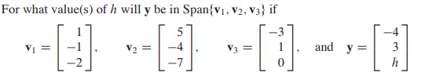

import numpy as np
import sympy as sp
from sympy import init_printing, Matrix, Symbol, MatrixSymbol, symbols
init_printing() #Will output latex looking resultsLinear Algebra
System of Linear Equations
A linear equation follows this pattern:
\[ \begin{align} a_1x_1 + a_2x_2+...+a_nx_n=k\\\\ \text{where }k\text{ and the coefficients }\textbf{a}\in \mathbb {R} \end{align} \]
A system of linear equations is a set of linear equations that follow this pattern.
\[ \begin{cases} a_{11}x_1 + a_{12}x_2+...+a_{1n}x_n=k_1\\ a_{21}x_1 + a_{22}x_2+...+a_{2n}x_n=k_2\\ \vdots\\ a_{m1}x_1 + a_{m2}x_2+...+a_{mn}x_n=k_m \end{cases} \]
Example: The system of linear equations as seen below are three sets of linear equations that share the same \(\textbf{x}\) terms
\[ \begin{cases} \begin{align} 1x_2 - 4x_3 = 8\\ 2x_1 - 3x_2 + 2x_3 = 1\\ 4x_1 - 8x_2 + 12x_3 = 1\\ \end{align} \end{cases} \]
If we space it out, we can see the following visual. Notice how it looks like a set of columns and rows.
\[ \begin{cases} \begin{align} & & &1x_2 &- &4x_3 &= &8\\ &2x_1 &- &3x_2 &+ &2x_3 &= &1\\ &4x_1 &- &8x_2 &+ &12x_3 &= &1\\ \end{align} \end{cases} \]
Matrix notation
We can construct a matrix with rows and columns to describe a system of linear equations. Notice how each entry in the matrix below is the coefficient to each \(x\) term; also, notice how the numbers to the right side of the line represent the constants. This type of matrix is called an augmented matrix
\[ \begin{bmatrix} \begin{array}{ccc|c} 0 & 1 & -4 & 8\\ 2 & -3 & 2 & 1\\ 4 & -8 & 12 & 1\\ \end{array} \end{bmatrix} \]
The matrix above has 3 rows and 4 columns which means it is a \(3\times4\) matrix.
To define an augmented matrix in Python, run the following code:
M_1 = Matrix(3,4,[0, 1, -4, 8,
2, -3, 2, 1,
4, -8, 12, 1])
M_1\(\displaystyle \left[\begin{matrix}0 & 1 & -4 & 8\\2 & -3 & 2 & 1\\4 & -8 & 12 & 1\end{matrix}\right]\)
Solving Systems of Linear Equations by finding the Identity Matrix
Take the following system of linear equations:
\[ \begin{cases} \begin{align} x + 2x_2 + 3x_3 = 0\\ 3x_1 + 4x_2 + 7x_3 = 2\\ 6x_1 + 5x_2 + 9x_3 = 11\\ \end{align} \end{cases} \]
M_2 = Matrix([[1,2,3,0],
[3,4,7,2],
[6,5,9,11]])
M_2\(\displaystyle \left[\begin{matrix}1 & 2 & 3 & 0\\3 & 4 & 7 & 2\\6 & 5 & 9 & 11\end{matrix}\right]\)
To solve this set of linear equations in Python, we can have the computer do the Gauss–Jordan elimination algorithm to change the matrix to reduced row echelon form (also called RREF)
M_2.rref()\(\displaystyle \left( \left[\begin{matrix}1 & 0 & 0 & 4\\0 & 1 & 0 & 1\\0 & 0 & 1 & -2\end{matrix}\right], \ \left( 0, \ 1, \ 2\right)\right)\)
Adding Vectors
A matrix with a single column is called a vector or column vector. For example, take the following vectors:
\[ v_1=\begin{bmatrix} 1\\ 2\\ 3 \end{bmatrix}, v_2=\begin{bmatrix} 4\\ 5\\ 6 \end{bmatrix} \]
\[ v_1 + v_2 = \begin{bmatrix} 1 + 4\\ 2 + 5\\ 3 + 6 \end{bmatrix} \]
You can add two vectors of the same size by combining their corresponding elements to produce a new vector of the same dimension. You cannot, however, add vectors of different sizes.
The code below finds the sum of \(v_1\) and \(v_2\).
v_1 = Matrix(3,1,[1,2,3])
v_2 = Matrix(3,1,[4,5,6])
v_1+v_2\(\displaystyle \left[\begin{matrix}5\\7\\9\end{matrix}\right]\)
Multiplying Vectors With Numbers
\[ \begin{align} 2v_1 = \begin{bmatrix} 2\times1\\ 2\times2\\ 2\times3 \end{bmatrix}, 3v_1 = \begin{bmatrix} 3\times1\\ 3\times2\\ 3\times3 \end{bmatrix} \end{align} \]
2*v_1\(\displaystyle \left[\begin{matrix}2\\4\\6\end{matrix}\right]\)
3*v_1\(\displaystyle \left[\begin{matrix}3\\6\\9\end{matrix}\right]\)
Linear Combinations
\[ \begin{cases} \begin{align} x + 2x_2 + 3x_3 = 0\\ 3x_1 + 4x_2 + 7x_3 = 2\\ 6x_1 + 5x_2 + 9x_3 = 11\\ \end{align} \end{cases} \]
\[ x_1 \begin{bmatrix} 1\\ 3\\ 6 \end{bmatrix} + x_2 \begin{bmatrix} 2\\ 4\\ 5 \end{bmatrix} + x_3 \begin{bmatrix} 3\\ 7\\ 9 \end{bmatrix} = \begin{bmatrix} 0\\ 2\\ 11 \end{bmatrix} \]
Practice Problem

To solve this problem, set up our matrix as so:
h = Symbol('h')
M_3 = Matrix([[1,5,-3,-4],
[-1,-4,1,3],
[-2,-7,0,h]])
M_3.rref()\(\displaystyle \left( \left[\begin{matrix}1 & 0 & 7 & 0\\0 & 1 & -2 & 0\\0 & 0 & 0 & 1\end{matrix}\right], \ \left( 0, \ 1, \ 3\right)\right)\)
Not working…
# M_3a = Matrix(3,3,[1,5,-3,-1,-4,1,-2,-7,0])
# M_3b = Matrix([-4, 3, h])
# M_3a.solve(M_3b)# a_1,b,c,d = symbols('a_1,b,c,d')
# e,f = symbols('e,f')
# P1 = Matrix([[a_1,b],[c,d]])
# P1.solve(Matrix([e,f]))